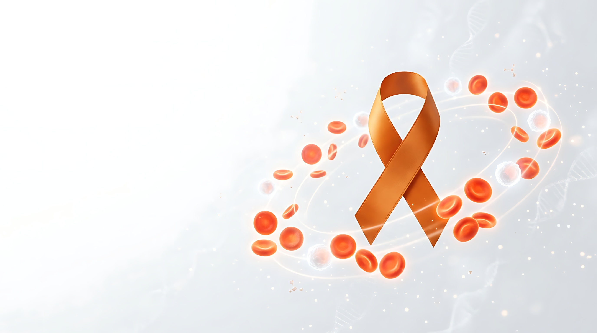

CID C92.1
Leucemia Mieloide Crônica (LMC)
Entenda a doença, os sintomas e o cuidado.
O que é a Leucemia Mieloide Crônica?
A Leucemia Mieloide Crônica (LMC) é um tipo de câncer do sangue que afeta principalmente os glóbulos brancos e tem início na medula óssea, local onde são produzidas as células do sangue. Embora seja considerada uma doença rara, pode ser controlada a longo prazo com tratamento adequado e acompanhamento contínuo.1
A LMC está relacionada a uma alteração genética adquirida que envolve os cromossomos 9 e 22. Essa translocação dá origem ao chamado cromossomo Filadélfia e ao gene BCR-ABL1, que leva à produção exagerada de glóbulos brancos anormais.1
Essa alteração
não é hereditária nem contagiosa,
e a LMC não está diretamente associada a hábitos como tabagismo, alimentação ou atividade física.1
Como a LMC pode evoluir?
A doença costuma evoluir lentamente e é dividida em três fases:
A maioria dos pacientes é diagnosticada ainda na fase crônica, quando os sintomas podem ser leves ou inexistentes.2
A origem da alteração genética que causa a LMC ainda não é completamente compreendida. A exposição a altas doses de radiação é descrita como um fator de risco para o desenvolvimento da doença.2
Quais são os sinais e sintomas da LMC?
Em alguns casos, principalmente na fase crônica, a LMC pode causar poucos sintomas ou permanecer assintomática.
Com a progressão da doença, algumas manifestações podem aparecer:3
Fadiga e fraqueza
Perda de peso inexplicada
Suor noturno
Febre persistente
Dor nos ossos
Aumento do baço
Sensação de saciedade após pequenas refeições
Anemia
Como muitos desses sinais também podem ocorrer em outras condições, sua presença isoladamente não confirma a LMC. A avaliação médica é importante para investigar a causa dos sintomas.3
Como é feito o diagnóstico da LMC?
A investigação pode envolver diferentes exames para avaliar as células sanguíneas e identificar alterações características da doença.
O hemograma permite avaliar as células presentes no sangue, enquanto o exame da medula óssea ajuda a analisar a presença de células anormais e a atividade da medula.4
São utilizados para identificar alterações típicas da LMC e contribuir para a confirmação diagnóstica.5
Podem ser utilizados para avaliar o comprometimento de outros órgãos, quando necessário.6
Detectar alterações e procurar orientação médica é importante para que a causa seja identificada e, quando necessário, o cuidado seja iniciado.7
Como é feito o tratamento da LMC?
Os avanços no tratamento da LMC transformaram o cuidado da doença e permitem que muitos pacientes mantenham suas atividades habituais e qualidade de vida.8
Na maioria dos casos, o tratamento é realizado com medicamentos que atuam de forma específica sobre alterações celulares relacionadas à LMC, ajudando a controlar a produção desregulada de células na medula óssea. Os inibidores de tirosina quinase (ITQs) têm papel central nesse tratamento.9
Quando esses medicamentos não são eficazes ou quando a doença progride, outras estratégias podem ser consideradas.
Entre elas está o transplante de medula óssea, cuja indicação deve ser avaliada individualmente.9,10
Por que o acompanhamento do tratamento é importante?
O acompanhamento médico regular, com exames periódicos, permite avaliar a resposta ao tratamento, identificar possíveis efeitos adversos e ajustar a abordagem sempre que necessário.9
Entre os efeitos adversos descritos com o tratamento podem estar:
- Alterações gastrointestinais
- Cansaço
- Desconforto muscular
- Retenção de líquidos
Essas manifestações variam de pessoa para pessoa e devem ser discutidas com a equipe de saúde.9
Para a maioria dos pacientes, o tratamento com ITQs é contínuo.11 Em algumas situações, pacientes que apresentam resposta clínica e laboratorial muito favorável podem ter a possibilidade de suspensão do tratamento avaliada, sempre com supervisão rigorosa e monitoramento frequente.9
Na maioria dos casos, a doença não é considerada curável apenas com as terapias medicamentosas disponíveis.12
Com os tratamentos disponíveis, a LMC pode ser controlada por longos períodos e muitos pacientes alcançam remissão.
LMC e qualidade de vida
Conviver com uma doença hematológica pode trazer impactos que vão além das manifestações físicas e atingir também o bem-estar emocional, social e a rotina diária.
Criar uma rotina estruturada, respeitar os limites do corpo, buscar informações de qualidade e contar com uma equipe multidisciplinar podem contribuir para a qualidade de vida.13
- manter horários regulares para sono, alimentação e medicamentos;
- respeitar os limites do próprio corpo e pedir ajuda quando necessário;
- buscar informações confiáveis sobre a doença;
- contar, quando necessário, com o apoio de profissionais como psicólogos, nutricionistas e fisioterapeutas.
Quando liberada pelo médico e adaptada às condições individuais, a prática de exercícios pode trazer benefícios para pessoas com doenças do sangue.14
- redução da fadiga e do estresse;
- melhora da autoestima, do humor e da disposição;
- fortalecimento muscular;
- prevenção de algumas complicações físicas.
Caminhadas curtas, alongamentos, pilates, yoga, dança leve ou exercícios com orientação fisioterapêutica são exemplos descritos, sempre com liberação médica prévia.14
Ansiedade, medo e tristeza podem surgir durante a jornada com uma doença hematológica. O suporte psicológico, atividades relaxantes e a participação em grupos de apoio são recursos que podem ajudar a lidar com esses sentimentos.15
A rede de apoio formada por familiares, amigos e outras pessoas que vivem situações semelhantes também pode contribuir para o bem-estar durante o acompanhamento da doença.15
Alimentação durante o tratamento
Durante o tratamento de doenças hematológicas, a alimentação pode contribuir para manter o estado nutricional e apoiar o organismo. Alguns pacientes podem apresentar redução do apetite, fraqueza ou alterações do paladar, o que pode dificultar uma alimentação adequada.16
Uma alimentação equilibrada pode ajudar a manter energia, reduzir o risco de desnutrição e contribuir para a recuperação.17
- frutas e vegetais adequadamente higienizados;17
- proteínas, como carnes, ovos e leguminosas;17
- grãos integrais;17
- oleaginosas e sementes;17
- ingestão adequada de líquidos.17
Também é recomendável reduzir o consumo excessivo de ultraprocessados, gorduras trans, doces e bebidas alcoólicas.17
Quando existem náuseas e vômitos
Pequenas refeições distribuídas ao longo do dia e alimentos frios podem ser melhor tolerados em alguns casos. Alterações intestinais também podem exigir ajustes na quantidade e no tipo de fibras.17
Em situações de sensibilidade ou inflamação na boca
Alimentos macios, mornos ou frios podem facilitar a alimentação, enquanto alimentos secos ou ácidos podem aumentar o desconforto.18
As necessidades nutricionais variam ao longo do tratamento. O acompanhamento com nutricionista pode ajudar a individualizar os cuidados, especialmente quando há dificuldade para manter a alimentação ou efeitos adversos importantes.17
Conscientização sobre a LMC
O Dia Mundial da LMC é celebrado em 22 de setembro. A escolha de 22/09 faz referência à alteração genética característica da doença, que envolve os cromossomos 22 e 9 e está relacionada à formação do cromossomo Filadélfia.19
Setembro também é um período dedicado à conscientização sobre doenças do sangue, reforçando a importância de reconhecer sinais e buscar avaliação especializada.

O hematologista é o profissional especializado no diagnóstico e tratamento das doenças do sangue. Consultas e exames laboratoriais fazem parte do acompanhamento de pessoas com condições hematológicas.20
Artigos relacionados
Referências
1. Instituto Oncoguia. Leucemia Mieloide Crônica LMC. 2025. Disponível em: https://www.oncoguia.org.br/cancer/leucemia-mieloide-cronica-lmc. Acesso em junho de 2025.
2. Bortolheiro TC, Chiattone CS. Leucemia Mielóide Crônica: história natural e classificação. Revista Brasileira de Hematologia e Hemoterapia. 2008;30:3–7.
3. Instituto Oncoguia. Sinais e sintomas da Leucemia Mieloide Crônica. 2015. Disponível em: https://www.oncoguia.org.br/conteudo/sinais-e-sintomas-da-leucemia-mieloide-cronica-lmc/1646/337/. Acesso em 09 jun. 2026.
4. Instituto Oncoguia. Exames de laboratório para Leucemia Mieloide Crônica (LMC). 2015. Disponível em: https://www.oncoguia.org.br/conteudo/exames-de-laboratorio-para-leucemia-mieloide-cronica-lmc/1649/337/. Acesso em 09 jun. 2026.
5. Instituto Oncoguia. Exames genéticos para Leucemia Mieloide Crônica (LMC). 2015. Disponível em: https://www.oncoguia.org.br/conteudo/exames-geneticos-para-leucemia-mieloide-cronica-lmc/1648/337/. Acesso em 09 jun. 2026.
6. Instituto Oncoguia. Exames de imagem para Leucemia Mieloide Crônica (LMC). 2015. Disponível em: https://www.oncoguia.org.br/conteudo/exames-de-imagem-para-leucemia-mieloide-cronica-lmc/1650/337/. Acesso em 09 jun. 2026.
7. Instituto Oncoguia. Detecção precoce da Leucemia Mieloide Crônica (LMC). 2015. Disponível em: https://www.oncoguia.org.br/conteudo/deteccao-precoce-da-leucemia-mieloide-cronica-lmc/7987/337/. Acesso em 09 jun. 2026.
8. Instituto Oncoguia. Tratamento da leucemia mieloide crônica por estágio. 2015. Disponível em: https://www.oncoguia.org.br/conteudo/tratamento-da-leucemia-mieloide-cronica/7997/338. Acesso em 27 jun. 2025.
9. ABRALE. Quais os tratamentos existem para Leucemia Mieloide Crônica. 2024. Disponível em: https://www.abrale.org.br/doencas/leucemia/lmc/tratamento/. Acesso em 27 jun. 2025.
10. Aranha FJP. Leucemia Mielóide Crônica: transplante de medula óssea. Revista Brasileira de Hematologia e Hemoterapia. 2008;30.
11. Instituto Oncoguia. Vivendo com Leucemia Mieloide Crônica (LMC). 2022. Disponível em: https://www.oncoguia.org.br/conteudo/vivendo-com-o-cancer/1121/306/. Acesso em 09 jun. 2026.
12. ABRALE. Leucemia Mieloide Crônica tem cura? 2024. Disponível em: https://www.abrale.org.br/doencas/leucemia/lmc/tratamento/. Acesso em 09 jun. 2026.
13. ABRALE. Qualidade de vida. Revista Abrale Online. Disponível em: https://revista.abrale.org.br/categoria/qualidade-de-vida/. Acesso em 27 jun. 2025.
14. ABRALE. Idosos com câncer podem (e devem) fazer exercício, aponta estudo brasileiro; entenda benefícios. 2024. Disponível em: https://abrale.org.br/noticias/idosos-com-cancer-podem-edevem-fazer-exercicioaponta-estudo-brasileiroentenda-beneficios/. Acesso em 27 jun. 2025.
15. Instituto Oncoguia. Como cuidar da saúde mental durante o tratamento de um câncer. 2023. Disponível em: https://www.oncoguia.org.br/conteudo/como-cuidar-da-saude-mental-durante-o-tratamento-de-um-cancer/16660/7. Acesso em 27 jun. 2025.
16. Instituto Oncoguia. Nutrição durante o tratamento de pessoas com câncer. 2016. Disponível em: https://www.oncoguia.org.br/conteudo/nutricao/9803/5. Acesso em junho de 2025.
17. ABRALE. A Boa Alimentação durante o tratamento de câncer. 2020. Disponível em: https://abrale.org.br/informacoes/alimentacao-e-cancer/. Acesso em junho de 2025.
18. Memorial Sloan Kettering Cancer Center. Alimentação adequada durante o tratamento do câncer. Disponível em: https://www.mskcc.org/pt/cancer-care/patient-education/eating-well-during-your-treatment. Acesso em junho de 2025.
19. Tua Saúde. Leucemia Mieloide Crônica (LMC): o que é, sintomas, causas e tratamento. 2025. Disponível em: https://www.tuasaude.com/leucemia-mieloide-cronica/. Acesso em junho de 2025.
20. SaúdeLAB. Hematologista: conheça o médico especialista em doenças do sangue e muito mais. 2024. Disponível em: https://saudelab.com/hematologista/. Acesso em junho de 2025.
Material destinado ao público leigo. 2026 © Direitos Reservados Novartis Biociências S/A – Proibida a reprodução total ou parcial não autorizada. Atualizado em 28 de agosto de 2026.
BR-XXXXX